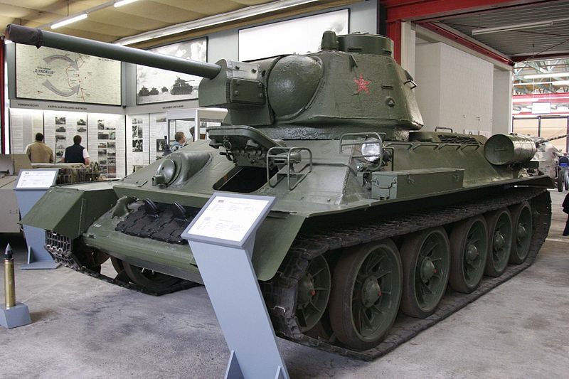

<div class="card">
    
    <div class="card-body">
        <h5 class="card-title">T-34 - Neuvostoliittolainen keskiraskas panssarivaunu</h5>
        <p class="card-text">
            T-34 on vaikea tuhota edestä alle alle 75mm kanuunoilla, mutta PaK kanuunat leikkaavat sen panssarista läpi kuin kuuma
            veitsi voista.
        </p>
        <p class="card-text">
            T-34 on kuitenkin vaikea vastus jopa saksalaisille PaK kanuunan omaaville tankeille, sillä se voi kääntää vaunuaan
            kulmaan jossa panssarin tehokkuus kasvaa ja ammukset voivat kimmota sen panssarista.
        </p>
        <p class="card-text">
            T-34 mukautuu hyvin kaikkien pelityyleihin. Sitä voi käyttää agressiivisesti hyökäten voimakkaan moottorin ja vahvan
            panssarinsa ansiosta tai sillä voi kiertää vihollisen asemiin sivusta. Itse suosin kartan reunalla roikkumista ja
            tarkka-ampumista vihollisen asemiin
        </p>
        <a href="http://wiki.warthunder.com/index.php?title=T-34_1942" class="btn btn-link">T-34 War Thunderin Wikissä</a>
    </div>
</div>